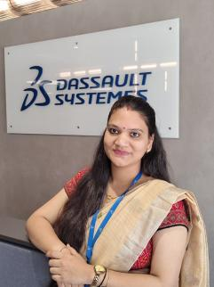

Operations discipline
Comfortable with recurring workflows, backend support, dashboards and execution details that keep enablement programs moving.
I’m Aarti Kunal Mahurkar, an Operations Excellence Specialist working across reseller enablement, learning content, certification support and operational execution.

Comfortable with recurring workflows, backend support, dashboards and execution details that keep enablement programs moving.
Creates digital learning experiences using tools such as Articulate Storyline, Review 360, Natural Reader and Camtasia.
Supports reseller certification requests and enablement activities tied to partner success and KPI progress.
My journey moved from dispatch operations into PLM and then into Operations Excellence. That mix gives me a practical view of how systems, processes and people connect.
Today my work sits at the intersection of learning, customer and reseller support, certification operations, dashboards and digital content creation.
I enjoy work where the outcome is simple to describe: help people understand what to do, remove friction from the process, and make execution easier to repeat.
Supporting SOLIDWORKS University certification-related requests and helping partners progress toward enablement goals.
Creating learning content for resellers and internal employees using a practical mix of authoring, review, narration and video tools.
Supporting dashboard-related backend activities, recurring operational workflows and task execution within sales enablement.
The same core behavior shows up across my work: understand the need, make the next step obvious, and build a repeatable way for people to succeed.
For partners and resellers, the value is not simply answering a request. It is making the path forward clear enough that they can keep moving with confidence.
Strong enablement is not about giving people more information. It is about helping them know what to do next.
Clarify the learning objective, sequence the content, review the experience, then refine.
Make ownership, status and the next action visible instead of leaving users in ambiguity.
Dashboards, backend activities and follow-through matter because consistency creates trust.
Dassault Systèmes Global Services, Pune • Contractor via Leuwint Tech
Dassault Systèmes Global Services, Pune • Contractor via Cohortech Consultancy
Dassault Systèmes Global Services, Pune
PLM Nordic, Pune • Siemens Partner Company
JMD Agro Food Product Ltd., Nanded
Certification support, reseller guidance, KPI support and partner-facing coordination.
Digital course creation, review cycles, narration support and video-based learning assets.
Dashboard support, recurring workflows, backend activities and execution follow-through.
3DEXPERIENCE, Teamcenter, Excel, foundational SQL and structured system-oriented thinking.
SGGS Nanded • 2020 • CGPA 7.37
Indira Gandhi Junior College, Nanded • 2016
With Distinction • Nanded • 2014
01 Understand the request without making the user repeat themselves.
02 Turn information into an action someone can actually follow.
03 Keep recurring work consistent without losing the human context.
Let’s talk about operations excellence, enablement, learning experience and partner-support roles.